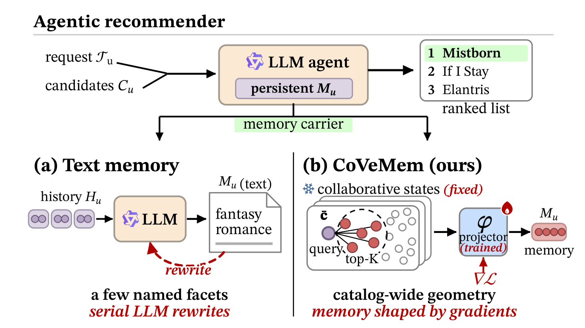
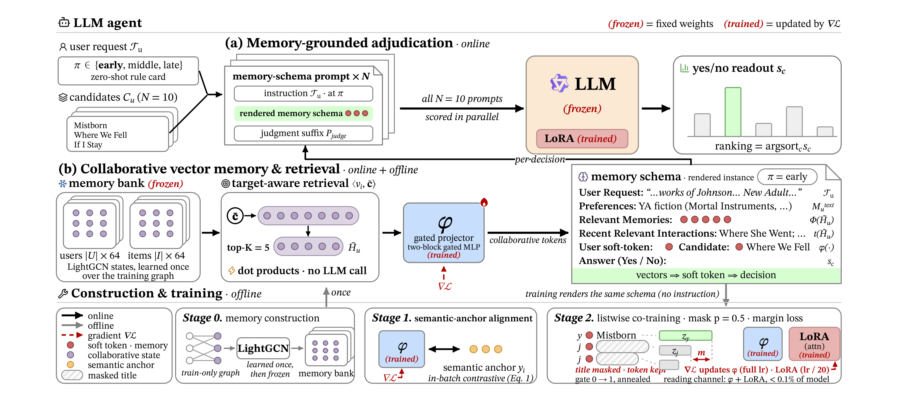
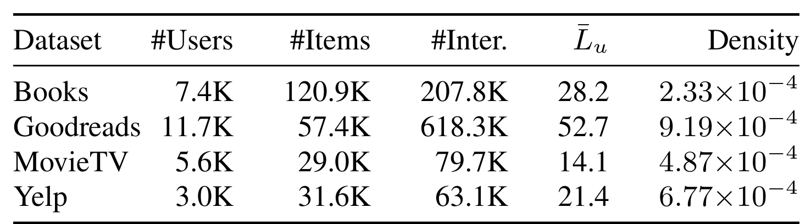
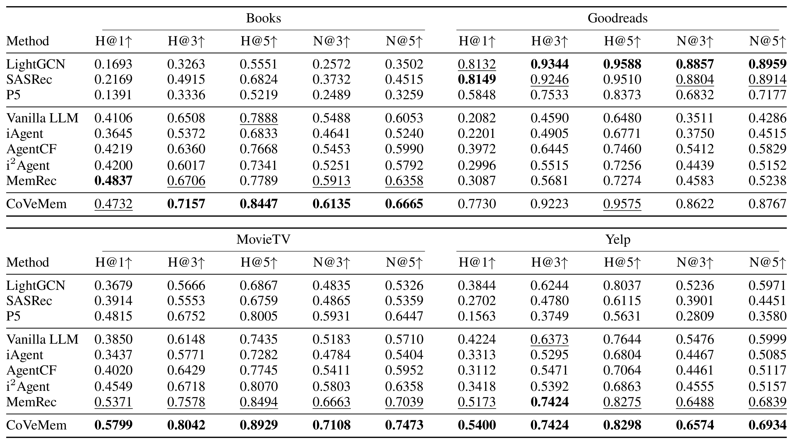
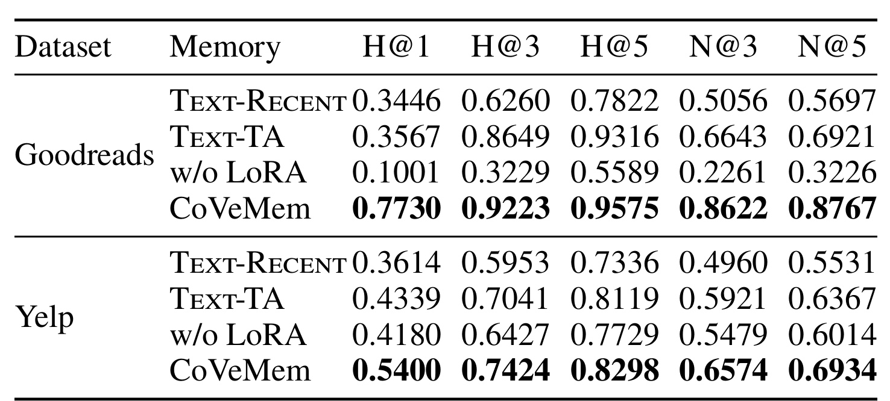
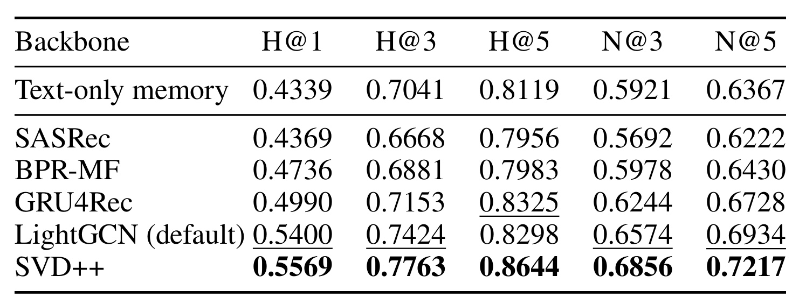
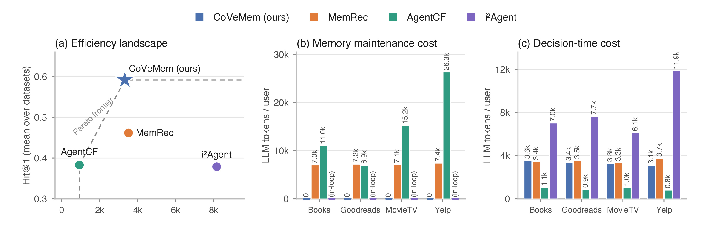

When Memory Takes Gradients：CoVeMem 协同向量记忆精读
这篇论文研究 Agentic Recommender System 中“用户记忆应该由什么来承载”。作者 Hanchong Chen、Xing Tang、Lingjie Li、Xiongfeng Shan 和 Xiuqiang He 均来自深圳技术大学。论文把 LightGCN 产生的用户/物品状态做成持久记忆库，再让大模型通过可训练投影器与 LoRA 读取这些状态。论文入口为 arXiv:2608.26895；本轮未核验到独立的 CoVeMem 官方仓库或项目页。
现有智能体推荐器多把长期记忆写成自然语言：每吸收一次新交互就可能需要额外的 LLM 重写，而且目录范围内连续、分级的协同关系一旦被压成句子，只能保留文本明确“点名”的少量事实；排序梯度也无法直接改写这些文本。
1. 背景和问题
大模型为推荐引入了一种不同于经典打分模型的交互界面：智能体可以读取用户当前的自然语言要求，结合长期偏好，再从平台提供的候选集中做出判断。在这个设定里，记忆不只是一段可有可无的上下文，它承载了用户没有在当次指令中重复声明的口味、历史和约束。没有持久记忆时，LLM 实际上只在做无状态的文本匹配；记忆质量则决定了它能否超越当前 prompt 表面的语义。
这里的“记忆”至少包含两类不同信息。一类是可直接语言化的事实，例如用户偏好低价位餐厅、不看恐怖片或正在寻找某个作家的作品；另一类是难以穷尽列举的关系结构，例如某用户与大量物品的连续相似度，以及这些相似度如何由其他用户的共同行为支撑。把两类信息都写成简短叙事，必然在可读性、完整性和更新成本之间取舍。CoVeMem 选择保留第一类文本，把第二类交还给协同状态，于是“混合”不是权宜拼接，而是对信息形态的分工。
近年的 iAgent、i2Agent、AgentCF、RecBot、MemRec 与 SAGER 对记忆内容做了不同扩展：静态侧写提供概括性偏好，自反思更新让文本随反馈演化，协同 facet 把邻居用户的信号写入叙事，工具与策略技能则让记忆可以驱动更复杂的行为。但这些工作大多改变的是“文本里写什么”，没有改变“文本是否适合做协同记忆载体”。一个用户可以同时与成千上万物品存在不同强度的隐式关系，这种几何结构不能靠“喜欢幻想和爱情”之类有限语句完整表达。序列化之后，未被显式命名的距离、邻域和相似度便消失了。
第二个矛盾是更新路径。文本记忆通常按交互串行重写，每个用户的每个新反馈都可能引入一次生成式调用。这不仅增加 token 和时延，还使得全量交互很难变成可并行优化的训练样本。经典推荐模型可以用 BPR 或排序 loss 从整个交互图学状态，但排序梯度不能穿过自然语言叙事去改写已存储的句子。因此 CoVeMem 的研究问题不是“再设计一种更好的用户摘要”，而是：能否让协同部分以向量状态持久存在，由全量交互学习，同时仍然能被 LLM 直接读取并参与自然语言指令下的候选排序。
这一问题还不同于普通的“协同 embedding 增强 LLM 推荐”。CoLLM、LLaRA、E4SRec 和 SAILRec 等工作已经说明行为表征可以投影到 LLM token 空间，但它们主要把这些表征当成单次排序的条件输入。CoVeMem 要论证的是更强的系统角色：向量库是智能体跨决策持续使用的协同记忆，每次由当前候选定位相关部分，而“怎样读”被排序任务统一训练。因此评估必须同时回答三个子问题：向量是否带来超过相关历史文本的增量；LLM 是否真学会读而非被向量干扰；不再串行重写文本是否真正降低记忆生命周期中的生成式成本。

Figure 1 将变化聚焦在“载体”而不是“智能体是否使用记忆”。上方的推荐链路不变：用户请求和候选集进入 LLM agent，记忆帮助产生排序列表。左侧文本路径先把历史交给 LLM 重写，最终只得到几个被命名的 facet；右侧把图中状态当作不需语言化的记忆，候选集先查询相关历史，投影器再把协同几何送进 LLM。图中“fixed states”和“trained projector”的区分很重要：本文不是在每次请求时实时改写用户向量，而是预先学好并冻结状态库，然后用排序监督学“如何读”。
这个问题同时连接了推荐系统和大模型记忆研究。对推荐而言，它试图把召回/协同建模积累的信号直接带到 agentic reranking，而不是先转成可读文本。对 LLM 而言，它把 memory 从 agent 自己要不断写的文档，变成一个可由任务梯度塑形、由参数化读取器访问的外部状态库。真正需要验证的不是向量是否“包含偏好”，而是 LLM 能否在文本很强、软 token 很少的情况下学会依赖这些状态，以及这种依赖是否能换来可观测的准确率和维护成本收益。
对证据的预期也应因此更严格。如果只有主结果提高，可能是目标感知检索带来了更好的历史标题；如果只有维护 token 下降，可能是将成本隐藏在未计入的离线训练中。所以论文需要用文本选择消融、LoRA 消融、多骨干替换和 token 成本分解建立一条完整的因果解释链。后面的实验值得看的地方，正是它是否把这些替代解释逐项排除。
2. 方法
2.1 协同向量记忆：状态库、目标感知检索与软 Token 注入
任务输入包含用户 (u)、表达当前需求的自由文本指令 (T_u) 以及候选集 (C_u)，候选集中有一个真实目标和若干负例。持久记忆是混合的：一方面，作者在仅含训练交互的用户-物品二部图上用 LightGCN 和 BPR 训练 64 维用户状态 (s_u) 与物品状态 (v_i)，然后冻结这些状态；另一方面，每个用户保留一份从训练评论中一次性提炼的短文本 profile，用于表达明确可语言化的偏好。因而 CoVeMem 没有否定文本，它把文本从“全部记忆”缩回到“轻量语义补充”。
如果把全部物品状态放入 prompt，上下文会过长。CoVeMem 先用当前候选的平均状态构造查询：
符号解释：(C_u) 是这次决策的候选集，(v_c) 是候选物品的协同状态，(\bar c) 是候选集在协同空间中的质心。它不试图表达用户的全部兴趣，而是概括“这一批候选正在问用户的哪个偏好局部”。然后它从当前可用历史中取内积最高的 (K=5) 个事件：
符号解释：(H_u^{\mathrm{avail}}) 是决策时可用的历史，训练时必须是当前正例之前的因果前缀，测试时则是训练交互序列；(\widetilde H_u) 是候选条件下最相关的历史子集。相比“取最近五条”，这一操作能把长期历史中与当前选择最接近的局部取回；同时正例和更晚交互被排除，避免检索直接暴露答案。
冻结状态还不是 LLM token。两层 gated MLP 投影器 (\phi) 把 64 维状态映射到 Qwen2.5-7B-Instruct 的 3584 维输入嵌入空间，每个状态占一个 soft token 位置。Prompt 中依次组合短文本 profile、5 个历史软 token、同一批历史的标题行、用户软 token 以及候选标题和物品软 token。强制对齐“软 token 和标题行描述同一个历史子集”，让协同证据和语义补充可以相互参照。
2.2 参数化记忆读取器：语义锚对齐与遮罩式列表联合训练
冻结状态库存“某个用户/物品是什么”，投影器和 LoRA 则存“LLM 怎样读这类协同证据”。后两者被定义为参数化记忆读取器，所有用户共享，约 680 万可训练参数，不到基座模型的 0.1%。其训练分两步。第一步为每个物品构造语义锚 (y_i)：对物品标题和可用类目 token 的 LLM 输入嵌入取平均，没有类目时用描述代替。对称的 batch 内对比损失为：
符号解释：(\phi(v)) 是投影后的协同物品状态，(y) 是物品文本语义锚，帽子表示 (L_2) 归一化，(\tau=0.07) 是温度，CE 的目标是 batch 对角线配对。双向目标一方面要求向量找到自己的语义锚，另一方面要求语义锚反向识别自己的向量。这一阶段只负责让 soft token 落到语言模型可解释的区域，并不保证它已能服务排序。
第二步把每个拥有足够因果前缀的训练交互转为一次列表排序事件。正例是该次交互的物品，负例从用户整条序列之外抽取。如果一直显示候选标题，LLM 可能只靠语义快捷方式完成任务，忽略协同 token。因此作者以 (p=0.5) 独立遮住候选标题：标题消失后，物品软 token 成为候选身份的主要载体。当正例被遮住时，比较池 (P) 只包含被遮住的候选，保证正负两侧的可见信息对称；当正例未遮住时，(P) 为整个候选集。排序 margin 目标为：
符号解释：(y) 是正例索引，(z_y) 和 (z_j) 分别是正例与竞争候选的 option logit，(m=1.0) 是期望间隔，(P) 至少需要两个元素。只要正例比任一负例高不到 (m)，就产生梯度更新投影器和 LoRA。候选遮罩和列表竞争共同完成了本文最关键的训练约束：排序损失不能只靠标题文本下降，必须迫使注意力学会比较协同 token。

Figure 2 把离线与在线路径放在同一张图里。左下的 Stage 0 在训练图上建状态库，状态之后冻结；Stage 1 只训投影器，使物品向量能对齐标题/类目语义；Stage 2 同时训投影器与 LoRA，候选遮罩阻断文本捷径。中间的记忆查询没有 LLM 调用，候选质心与历史状态做内积即可得到 top-(K)。右上角的线上裁决为每个候选构造一份紧凑 prompt，把一个候选的 token 和说明放在对应位置，然后并行取 Yes logit。图中红色火焰表示被梯度更新的投影器与 LoRA，雪花标出冻结的 LLM 和协同状态，因而可以清楚看到“memory takes gradients”不等于所有个人状态在每次请求时都实时改写。
训练还用两个安全阀控制早期不稳定：软 token 的门值在前 (T_g=60) 步从 0 退火到 1，等投影器稍微可用后再全量打开记忆通道；用户 token 和历史槽位施加 0.1 的轻量 dropout，减少模型对固定位置的过拟合。LoRA 位于注意力的 (W_q,W_k,W_v,W_o)，rank 为 4、(\alpha=8)、dropout 为 0.05；投影器学习率 (10^{-4})，LoRA 是它的二十分之一。这样的优化分工使软 token 先获得语义坐标，再让注意力慢速学会如何使用它。
2.3 记忆支撑的裁决：指令位置与并行点式 Yes/No 打分
训练使用列表竞争，推理却不直接让 LLM 生成排序列表。原因是一个列表 prompt 会被所有候选的文本填满，少量协同 token 在几百个文本 token 中容易被稀释，生成结果还需额外解析。CoVeMem 为每个候选分别构造简短 prompt，只读取回答位置的 Yes logit，所有 (N) 份 prompt 可并行前向。候选分数写为：
符号解释：(s_c) 是候选 (c) 的分数，(M) 是冻结基座 LLM 及已训 LoRA，(M_u^{\mathrm{text}}) 是静态文本 profile，(\Phi(\widetilde H_u)) 是 5 个历史软 token，(t(\widetilde H_u)) 是对应标题行，(\phi(s_u)) 与 (\phi(v_c)) 是用户和当前物品 token，(P_{\mathrm{judge}}) 是固定判断后缀，(\pi) 表示指令插入位置。最终对所有 (s_c) 排序。这是非生成式 readout，去掉了生成名次的解析失败，但仍然需要候选数量份前向计算；“可并行”不等于随候选规模免费扩展。
指令只在测试时出现，因为 InstructRec 的指令由用户被留出的目标物品派生，如果把它放入因果训练就会带来目标条件信息。但指令放在 prompt 的早、中、晚三个位置会改变它与协同 token 到判断位置的距离。作者不用测试反馈搜索位置，而是让一张零样本规则卡只查看训练集统计量：
符号解释：(d) 是每个物品的训练交互密度，(q) 是最热门 1% 物品占全部训练交互的比例。规则为 (d\ge5) 或 (q\ge25\%) 时把指令放早，让更可靠的协同 token 靠近判断位置；不满足时，若 (d\ge2.5) 或 (q\ge12\%) 则放中间，否则放晚。所以 Goodreads 为 early，MovieTV 为 middle，Books 和 Yelp 为 late。这个位置规则避免了测试集调参，但它仍是由 LLM 生成、仅在四个域上验证的启发式阈值，不是已证明可普遍迁移的定律。
3. 实验结果
3.1 数据集、候选构造与对比系
实验使用 InstructRec 的四个指令支撑推荐域：Amazon Books、Goodreads、Amazon MovieTV 和 Yelp。交互在用户内按时间排序，最后一个物品作为测试目标，倒数第二个作为验证目标。每个测试实例在 10 个候选中排序：1 个真实留出物品加 9 个从用户整条序列之外均匀抽取的负例，随机种子为 42。指标为 Hit@1/3/5 和 NDCG@3/5，在完整测试集上报告。因此这个实验更接近“小候选 reranking”，不是从十万级物品目录端到端召回。

Table 1 不只是规模介绍，它为后续域间差异提供了解释变量。Goodreads 有 1.17 万用户、5.74 万物品和 61.83 万交互，平均历史长度 52.7，密度 (9.19\times10^{-4})，明显高于其他三个域。Books 物品最多，达 12.09 万，密度只有 (2.33\times10^{-4})；Yelp 与 MovieTV 也比 Goodreads 更稀疏。这意味着同一 LightGCN 状态在 Goodreads 上有更多直接协同证据，在 Books/Yelp 上则更需文本语义补充。但该表的“Density”是用户-物品矩阵密度，不应与附录指令规则中的每物品交互数 (d) 混为同一口径。
基线分三组。经典推荐器包括 LightGCN、SASRec 和 P5；无显式记忆的 Vanilla LLM 衡量纯语义能力；文本记忆 agent 包括 iAgent、i2Agent、AgentCF 和当前协议下最强的 MemRec。所有 agentic 方法都用相同 LLM 栈复现。CoVeMem 的基座为冻结的 Qwen2.5-7B-Instruct，bf16 运行；两阶段优化在单张 A800 80GB 上完成，列表联训 2 个 epoch，批大小 16。验证集检查使用固定抽样的 400 个用户，与测试相同的点式 readout 选 checkpoint。
公平性上，论文强调图和 profile 只用训练切分，测试目标同时从二部图和静态 profile 留出，候选负例也不会出现在用户全序列里。这阻断了最直接的测试标签泄漏。但联合训练的早期事件仍使用从完整训练期学到的静态状态和 profile，因而对“历史时刻可见信息”采取与文本记忆基线一致的 transductive 口径。严格线上时序模拟应要求状态库也只由事件当时前缀建立，本文没有完成这一级别的回放。
指标解读上，H@1 是智能体能否把唯一正例放在首位，H@3/H@5 则容许正例出现在更宽的前置集合；NDCG 还会根据真实名次折损，所以“H@5 上升而 H@1 未升”意味着正例被推进前列，却未必在最后一步成为首选。这一区分对 Books 尤其重要，也防止把“19/20 持平或更好”误读为所有域都有相同大小的可用提升。
3.2 主结果：向量记忆的收益随协同密度变化

Table 2 有两个阅读层次。第一层是与文本记忆的正面对比：作者统计 CoVeMem 相对 MemRec 在 4 个域乘 5 个指标的 20 个单元格中，19 个持平或更高。唯一例外是 Books 的 H@1：CoVeMem 为 0.4732，MemRec 为 0.4837。但 Books 的 H@3、H@5、N@3 和 N@5 从 MemRec 的 0.6706、0.7789、0.5913、0.6358 提高到 0.7157、0.8447、0.6135、0.6665。这说明该方法在稀疏 Books 上对“第一名必须命中”未胜出，但对前 3/前 5 的整体排序质量仍有收益，不应简化为“四域全指标完胜”。
第二层是域间效应。Goodreads 上 CoVeMem 的 H@1 达 0.7730，相比 Vanilla LLM 的 0.2082 和 MemRec 的 0.3087 是显著跃升；该域仅用训练集热度排候选已可得到 0.6727 的 H@1，说明人群统计本来就很有信息量。CoVeMem 将这些统计以图状态传给 LLM，从 Vanilla LLM 到最强经典推荐器的 H@1 差距中恢复了超过九成。但 LightGCN 和 SASRec 在 Goodreads 的 H@1 分别为 0.8132 和 0.8149，仍高于 CoVeMem；这提醒我们，该工作的核心是让 agent 获得协同能力，不是证明 LLM 排序已全面超过专用推荐器。
MovieTV 上 CoVeMem 五个指标均高于 MemRec，H@1 为 0.5799 对 0.5371，N@5 为 0.7473 对 0.7039，方向稳定但幅度比 Goodreads 小。Yelp 上 H@1 从 MemRec 的 0.5173 到 0.5400，H@3 两者同为 0.7424，其他指标小幅提高。稀疏域的证据更支持“向量是文本的补充”，而不是“向量取代语义”。表注声称改进均在 (p<0.05) 下显著，但表格本身没有展示置信区间、方差或具体显著性检验，复现时仍需核对代码补充的统计实现。
3.3 内存组件消融：仅选对历史不等于读懂向量
消融专门挑选差异最明显的 Goodreads 和 Yelp。Text-Recent 去掉协同向量记忆，只留最近历史标题；Text-TA 也不注入向量，但使用同样的候选感知检索选标题；w/o LoRA 保留投影器和软 token 注入，却把注意力适配器冻结在零初始化；CoVeMem 则保留全部组件。

Table 3 显示目标感知选择本身有价值，但不足以解释完整提升。Goodreads 上 Text-Recent 和 Text-TA 的 H@1 分别为 0.3446 和 0.3567，Text-TA 的 H@3 从 0.6260 大幅上升到 0.8649，表明按当前候选挑历史能将真实物品推进前 3；但它的 H@1 仍远低于完整模型的 0.7730，向量证据才是第一名决断的主要来源。Yelp 上 Text-TA 的 H@1 为 0.4339，比 Text-Recent 的 0.3614 更高，但仍低于 CoVeMem 的 0.5400，方向一致。
更强的反证来自 w/o LoRA。Goodreads 上它的 H@1 只有 0.1001，比 Vanilla LLM 还低，几乎落到 10 候选的随机水平；Yelp 上也只有 0.4180，低于完整模型的 0.5400。向量一旦被强行塞进 prompt，而注意力没学会读它，它不只“没用”，还会干扰原有文本证据。这使论文的贡献从简单的 embedding injection 中区分出来：决定成败的是“状态库 + 对齐 + 遮罩排序 + 注意力适配”这一完整读取链路。
3.4 协同骨干可替换性：接口可模块化，收益受状态质量上限约束
为了区分 CoVeMem 是否只对 LightGCN 有效，作者在 Yelp 上用五个骨干生成用户/物品状态：矩阵分解类 BPR-MF 与 SVD++，图传播类 LightGCN，序列编码类 GRU4Rec 与 SASRec。替换状态后，对齐、联合训练、候选与 readout 全部按同一流程重训；只对范数与默认状态偏离较大的导入表做缩放。这个设计验证的是记忆接口，而不是用同一 reader 零样本插拔状态。

Table 4 显示五种骨干都能训通，但记忆质量会直接传导到最终排序。纯文本记忆的 H@1 为 0.4339；SASRec 状态为 0.4369，几乎没有明确优势；BPR-MF 和 GRU4Rec 分别达到 0.4736 和 0.4990；默认 LightGCN 为 0.5400，SVD++ 最高，为 0.5569。从 H@3、H@5 和 NDCG 也能看到类似梯度，SVD++ 的五个指标均为最高。这支持“任意能产生用户/物品状态的经典推荐器都可以作为记忆源”的接口主张，但不支持“接什么向量都会稳定提升”。
对工程实现而言，这张表把记忆库与读取器解耦成两个可诊断层：可先用对齐 retrieval 、邻域纯度或专用排序指标检查状态库，再用遮罩候选消融检查 reader 是否真在使用它。如果弱骨干输出的状态本来不能区分候选，投影器无法无中生有；如果状态有信息却 w/o LoRA 崩掉，问题则在读取界面。这种层次化诊断比只看端到端 H@1 更利于定位故障。
3.5 内存维护与决策成本：“零维护调用”需要正确理解边界
效率实验把 LLM token 分成两类：维护成本是构造或更新各方法额外记忆所需的生成式调用；决策成本是为候选打分的输入 token。四个方法都有一份共享的一次性静态 profile，统计时将它排除，只比较每种系统在此之上的额外成本。MemRec 用主 LLM 反思并向邻居用户传播 facet，AgentCF 在每个交互后共同改写用户和物品文本，i2Agent 则把 profile、knowledge 和 interest 的更新放在每次决策中。这三者都存在反复生成和串行时延。

Figure 3(a) 将四个域平均 H@1 与每用户决策 token 放在同一坐标系中，CoVeMem 位于高准确率端的 Pareto 前沿；它不需生成排序文本，只读 Yes logit，决策输入成本也低于或接近对比 agent。Figure 3(b) 中 CoVeMem 的额外 LLM 维护 token 为 0，而 MemRec 和 AgentCF 需要大量记忆写入；i2Agent 的维护发生在决策调用内，因而其成本出现在 Figure 3(c) 而非 (b)。这个口径下，CoVeMem 不需每交互调 LLM 重写记忆，也将全量交互从串行写入转为可批量训练的事件。
但“维护 token 为 0”不是“记忆成本为 0”。计算边界没有纳入共享静态 profile 的生成、LightGCN 的 50 轮 BPR 训练、投影器对齐与列表联训、状态库的存储/重建。方法将成本从“每次交互都调生成模型”转成“离线构建协同模型与训练读取器”，这对大量用户的系统很可能更易并行和摊销，但完整的 GPU 时间、显存、状态更新频率和线上延迟仍未在这张图中闭环。
4. 总结
4.1 我的判断
CoVeMem 最有价值的贡献不是“往 LLM 输入里塞几个 embedding”，而是把智能体记忆拆成了三个可分别优化的层次：协同骨干决定状态库包含什么信息，候选感知检索决定当前请求读哪段记忆，投影器与 LoRA 决定 LLM 怎样理解并用于排序。遮罩式列表联训则为第三层建立了不可轻易逃避的监督信号。主结果与 w/o LoRA 消融相互支撑：收益不只是多看了几个相关标题，而是学会了读向量。
对推荐系统，这种结构很适合作为候选重排层的个性化记忆：召回或表征层提供协同状态，LLM 保留处理当前指令、物品语义和解释约束的优势。对大模型记忆，它表明不同信息应选不同载体：可精确语言化的规则和偏好可留在文本，大规模连续关系则可以保留为向量，用任务梯度去训练读取接口。这比迫使一份文本摘要兼顾所有尺度的信息更合理。
若要把它落到真实链路，我会把记忆库视为有版本的特征服务，而非模型内部一份永久不变的表。线上请求应记录状态库版本、候选集、top-(K) 历史索引和 reader checkpoint，才能在效果变化时区分是协同骨干漂移、检索错位还是 LLM 读取失效。同时需要给新用户、新物品和极短历史定义明确回退：软 token 不可靠时，应逐步降低门值并让文本 profile 或常规排序器接管，不能因为模型形式上能读向量就默认每个状态都值得信任。
4.2 局限、复现重点与后续跟进
第一，当前证据全部来自四个 instruction-grounded 离线基准，每次只排 10 个采样候选，尚不能推导到大规模召回、千级重排或真实串联的线上延迟。第二，状态库与文本 profile 在整个训练期上一次性构建，早期训练事件所读的冻结状态可能已反映后续训练交互；虽然测试目标被严格留出，这仍是 transductive 而非严格 streaming 的时序口径。第三，“零额外维护调用”排除共享 profile 并只计 LLM token，没有包含图模型重训、状态刷新、存储和 GPU 联训成本。第四，指令在训练中缺席、在测试中才出现，而插入位置由只经四域验证的启发式规则决定，存在训练-推理差异和域外失效可能。第五，骨干实验证明了接口可替换，也同时证明最终上限受协同状态质量约束；弱状态不会因为经过 LLM 就自动变强。第六，本轮未核验到公开实现，细节复现需依赖论文附录中的 prompt、超参和作者所述的 code supplement。
后续最值得做的三组检查是：其一，把图状态改为真正的时间增量更新，用只见过当时历史的 snapshot 重做排序，以分离 transductive 便利与方法本身的收益；其二，把候选数从 10 扩到 100/1000，同时记录 pointwise 并行前向的端到端延迟、KV cache、显存与能耗，验证 Pareto 优势是否还存在；其三，在严格等成本下对比非生成式文本缓存、多骨干融合和可学习检索，看增益究竟来自载体、骨干质量还是 reader 容量。此外，个人向量记忆还需要补做删除权、遗忘、隐私攻击与偏好漂移测试，否则“不用重写”也可能变成“无法及时修正”。